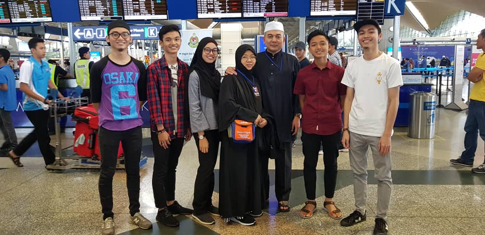
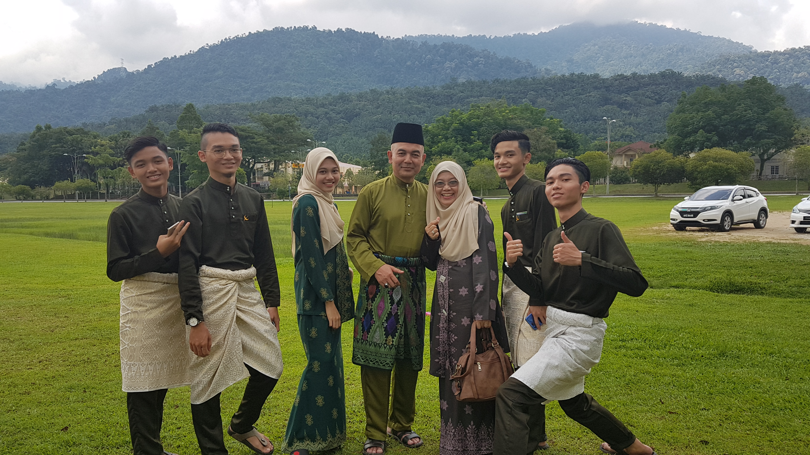

ABOUT ME

| 
| 
| 
|
|---|
Hye my name is Noor Amirah Amanina binti Noor Ariffin
Currently i'm living in Kuarters Pengarah Institut Latihan Perindustrian Pedas, Lot 3289, Jln Pedas Linggi, 71400 Pedas, Negeri Sembilan
I was born at Hospital Sultanah Aminah, Johor Bahru | 14 July 1999
I also a student of Bachelor in Office System Management (BA232) at UiTM Machang, Kelantan
Drawing and cooking is my passion but if only my mood turns to good
Part time being 'kakak' of 3 cats even they are fat and lazy but kakak love you all!
|  | 
|  | 
| 
|
|---|
MY FAMILY
My father's name is Noor Ariffin bin Muhd Ariff. Babah turn 54 years old this year since his birthday on 5 February 1966. He works under Jabatan Tenaga Manusia which is at Institut Latihan Perindustrian Pedas as a Director. He is my only babah and my first hero in my life since I'm only daughter in my family. I wish I could repay all the sacrifices he has made since I was a baby and was able to make him feel proud of my success
I have a superwoman and a loving person mom named Khamsasiah binti Mhd Amin. Her name could make me proud as her daughter because her strength as a mother is beyond the reach of the minds of every one of her children. Ibu's birthday is on 8 July 1971 which is she already in 49 years old and full time housewife for her beloved husband. Without both my parents, I would not be able to continue studying until this degree.
This is my eldest brother, my only one abanglong, Muhammad Amirul Ikwal bin Noor Ariffin. He just married her schoolmate, Kak Wawa on August 31 last month. He was born on 02 January 1994 at Hospital Besar Kuala Lumpur. Now he works in Klang as an engineer in a private company.
I also have second brother which is abangah, Muhammad Aiman Farahi bin Noor Ariffin. He was born on 18 June 1997 at Hospital Playmouth, United Kingdom. He had just graduated from uia in an architecture course. Supposed to be, he already get a job, but during this pandemic his desire to work was nullified and just stay at home until I don't know when hahahahhha. I wish he get a job as soon as possible and continue with his passion as an architect
Yeah I am the third and the only one girl in my siblings. Being an only girl in my family sometimes its seems better, but sometimes not because of course I need to do the housework alone but Allah is a omnipotent and omniscient. Being a daughter can make me special like I don't need to compare with other siblings about my character, face or even my attire because it is absolutely different. So right now I'm living in happy surrounding with a positive and healthy family.
Get to know my forth brother, Muhammad Amir Farhan bin Noor Ariffin. We usually called him as Amir and now he is 19 years old. He was born on 12 September 2001 at Hospital Putrajaya. Now, he is a student at Institut Latihan Perindustrian Bukit Katil, Melaka as an electrical currently in 2nd semester. During this pandemic, I think he already forgot he is an electrical boy because 24 hour I can watched him playing a game until midnight that's why he still single right now but I wish him all the best in his life.
And lastly, the only one and matured adik in this world named Muhammad Ariff Fahim bin Noor Ariffin. He is 15 years old right now and a student in Sekolah Menengah Sains Rembau. He was born on 03 February 2005 in Hospital Kajang. He is a korean boy because from dawn until dusk I could see him watching Kdrama with a huge feeling and nobody cannot disturb him but one thing I suspicious about him, even he is a Kdrama fans but he still perform on his final exam. Therefore, it is miracle for me as his sister.